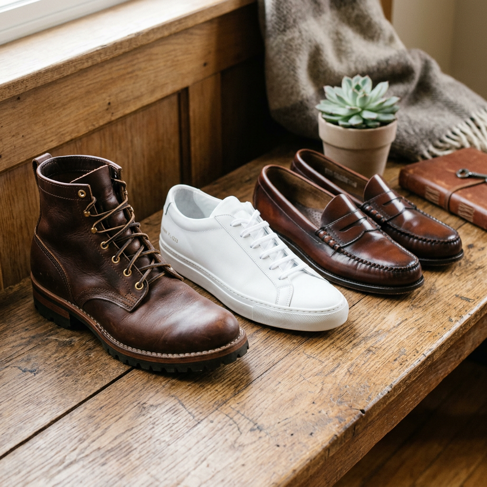

The Ultimate Shoe Department Guide: How to Secure the Perfect Pair Every Time
The Cost of the Wrong Choice: Why Your Shoe Department Strategy Matters
We have all been there. You walk into a massive shoe department, dazzled by the rows of polished leather and sleek athletic silhouettes. You find a pair that looks incredible, try them on for thirty seconds, and head to the checkout. Two weeks later, those same shoes are sitting in the back of your closet because they give you blisters, offer zero arch support, or are already starting to fall apart at the seams.
The truth is, most consumers approach the shoe department with a 'looks-first' mentality, which is a recipe for wasted money and physical discomfort. High-intent buyers know that footwear is an investment in their health and their image. To navigate the department like a pro, you need to look beyond the aesthetic and understand the mechanics of quality, the nuances of fit, and the red flags of poor construction.
The 3-Point Quality Check: Separating the Premium from the Plastic
Before you even look at the price tag or the size, you must perform a tactile inspection. A world-class shoe department will carry a range of qualities, and it is up to you to filter them. Here is the framework experts use:
- Material Integrity: If you are looking at leather, it should feel supple yet substantial. Avoid 'genuine leather' labels if you want longevity; look for 'full-grain' or 'top-grain.' If the material feels overly plastic or has a chemical smell, it is likely a low-grade corrected grain that will crack within months.
- The Sole Connection: Inspect how the sole is attached to the upper. In the highest quality footwear, you will see stitching (such as a Goodyear welt or Blake stitch). While many modern athletic shoes use high-tech adhesives, in formal or casual dress shoes, visible stitching is a hallmark of durability and the ability to be resoled.
- Interior Lining: A common shortcut for manufacturers is using synthetic linings that don't breathe. A premium shoe will often feature a leather lining or high-performance moisture-wicking fabric that prevents odor and keeps the foot cool.
The Science of the Perfect Fit
The most common mistake made in the shoe department is buying based on a 'standard' size. Sizing is notoriously inconsistent across brands and even between different models from the same manufacturer. To ensure a high-conversion purchase that you won't regret, follow these professional fitting rules:
1. The Afternoon Rule
Your feet naturally swell throughout the day. If you shop for shoes first thing in the morning, you are likely buying a pair that will be painfully tight by 4:00 PM. Always visit the shoe department in the late afternoon or evening to ensure the fit accounts for your feet at their maximum volume.
2. The Rule of Thumb
When standing, there should be about a half-inch (roughly the width of your thumb) between your longest toe and the front of the shoe. Your toes need room to splay and move as you walk. If they are pressed against the front, you are risking long-term foot health issues.
3. The Heel Lock
Walk around the department at a brisk pace. Your heel should stay firmly in place. If it slips out, the shoe is too large or the heel cup is poorly designed for your anatomy. Constant friction in the heel is the number one cause of blisters and premature wear on the shoe's interior.
Navigating Specialized Sections
A comprehensive shoe department is usually divided into specialized zones. Understanding these helps you filter your search immediately:
- The Athletic Lab: Focus here should be on gait analysis. Many premium shoe departments now offer treadmill testing to see if you overpronate or supinate. This is critical for preventing injury.
- The Heritage/Classic Section: This is where you find investment pieces. Focus on timeless styles like Oxfords, Derbies, or Chelsea boots. These are the items where you should maximize your budget for better materials.
- The Performance/Lifestyle Hybrid: This is the fastest-growing segment. These shoes prioritize comfort technology (like memory foam or air cushioning) while maintaining a style suitable for an office environment.
The Verdict: Quality Over Quantity
The secret to a perfect wardrobe isn't having fifty pairs of shoes; it's having five pairs of exceptional shoes. When you enter the shoe department, go in with a 'Value-Per-Wear' mindset. A high-quality pair of leather boots might cost three times more than a fast-fashion alternative, but if they last five times longer and provide superior comfort, the math clearly favors the premium option.
By focusing on material quality, proper timing for fitting, and understanding the construction methods, you transform from a passive shopper into a savvy investor. Your feet—and your wallet—will thank you.
